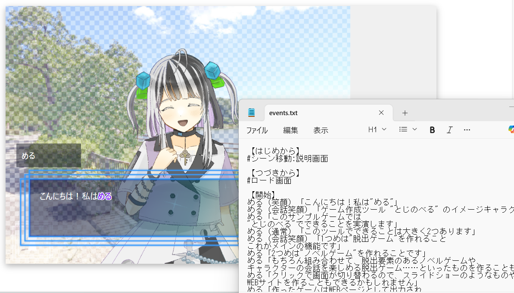

とじのべる
とじのべる

特徴
無料で使える
個人・法人・団体を問わず利用可能。商用利用も制限なし。
シンプルな操作
専門知識不要。
誰でも簡単にゲームがつくれる。
作品をWEBに公開
完成したゲームはHTML + CSS + Javascriptとして出力。
機能
クリックポイントや画像を直感的に配置
クリックポイントや画像の位置を
ドラッグで調整できます。
デザイン変更も簡単
セリフ表示・選択肢・入力フォームなど
ゲームのデザインを簡単に変更できます。
脱出ゲームに特化した機能
アイテムの管理、部屋の移動など
脱出ゲームに必要な機能を
あらかじめ搭載しています。
ノベルを「括弧書き」で
複雑なコマンドを書かなくても
さくっとノベルゲームが作成できます。

動作環境
【OS】
Windows 10 / 11
macOS
Linux
【ブラウザ】
Google Chrome（最新版）
Microsoft Edge（最新版）
Firefox（最新版）
Safari（最新版）
注意事項
とじのべるは 個人開発 & ベータ版公開中 です。
- 最小限の機能で構成されています。
- 予期せぬバグやデータ破損の可能性があります。
- バグ修正に時間をいただく場合がございます。